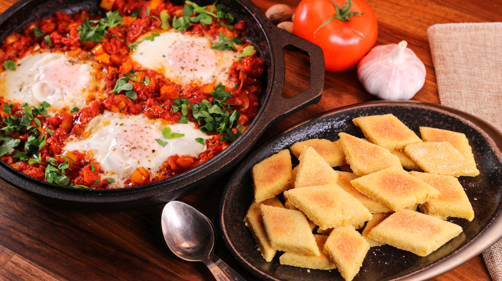

Back to Home
Chakchouka

Description
Chakchouka is a traditional Algerian dish made with a flavorful mix of
tomatoes, onions, and green peppers, cooked down into a rich sauce and
often topped with eggs poached directly in the mixture. Seasoned with
spices like paprika, cumin, and garlic, it's typically served hot with
crusty bread. Simple yet hearty, Chakchouka is a popular comfort food
across North Africa.
Ingredients
Olive Olive
Onions (sliced or chopped)
Green peppers (sliced or chopped)
Ripe tomatoes (peeled and chopped or grated)
Garlic (minced)
Eggs (optional, but commonly added)
Paprika
Ground cumin
Salt
Black pepper
Harissa or chili (optional, for heat)
Fresh parsley or coriander (for garnish, optional)
Steps
Heat the oil in a large pan over medium heat.
Add the onions and sauté for 3–5 minutes until soft and
translucent.
Stir in the green peppers and cook until softened, about 5–7
minutes.
Add the garlic and cook for 1 minute until fragrant.
Add the tomatoes, paprika, cumin, salt, and pepper. Stir well.
Simmer uncovered for 10–15 minutes, stirring occasionally, until the
mixture thickens and becomes sauce-like.
(Optional) Add harissa or chopped chili if you like it spicy.
Make small wells in the sauce and crack the eggs into them (if
using).
Cover the pan and cook for 5–8 minutes until the egg whites are set but
yolks remain soft, or cook longer if you prefer firm yolks.
Garnish with parsley or coriander, and serve hot with crusty bread.